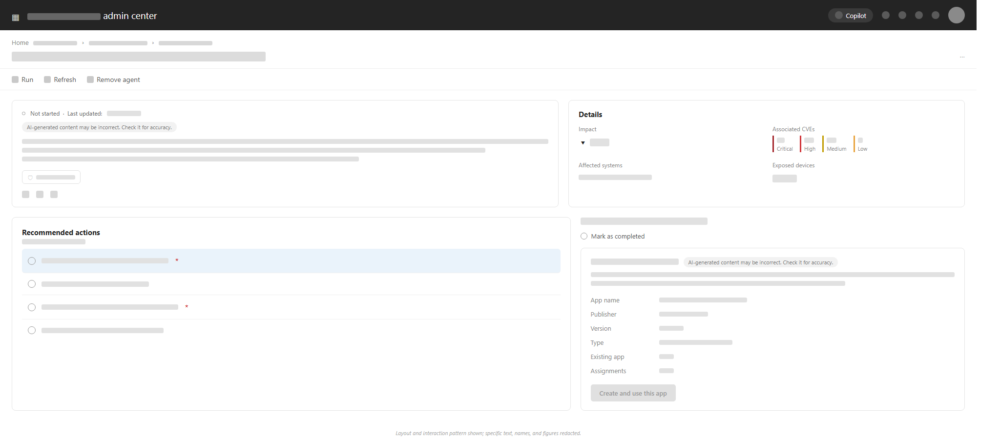
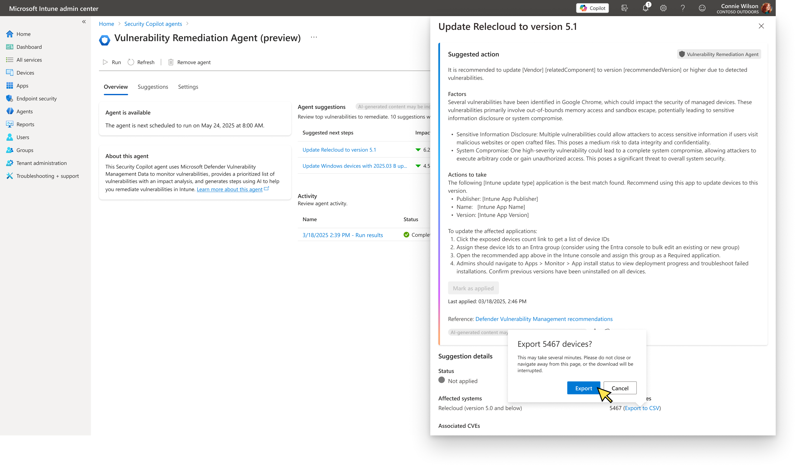
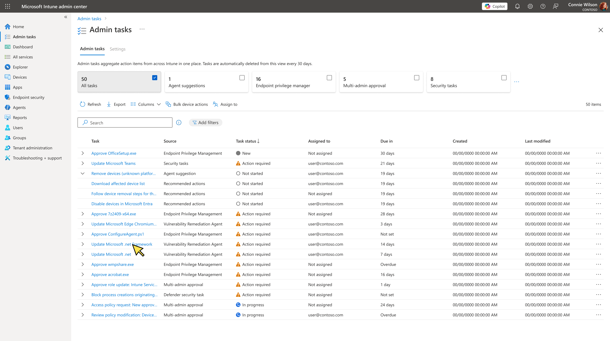

Vulnerability Remediation Agent
A single CVE (Common Vulnerabilities and Exposures) could touch thousands of devices — remediation meant stitching together risk, device targeting, and deployment by hand, across Defender and Intune. VRA’s loop — Connect, Enable, Run, Remediate, Track — turned that manual process into a two-week cycle done in under two minutes.
- Role
- Lead UX · Public Preview → GA planning
- Scope
- Defender + Intune, thousands of devices
- Outcome
- Two-week remediation cycle to under two minutes
“Supercharging IT Efficiency: Meet the Vulnerability Remediation Agent” — Julia Idaewor, Intune PM, Microsoft.
A single CVE (Common Vulnerabilities and Exposures) could touch thousands of devices at once. Remediating it meant pulling threat signal from Defender, cross-referencing it against Intune’s device inventory, and manually building a deployment plan — risk assessment, device targeting, grouping, and rollout strategy, stitched together by hand across two products and two teams. Nothing about that process scaled.
VRA needed permissions spanning two products, not one — read access to Defender’s vulnerability data, plus read access to Intune’s apps and device configurations. Getting that right was the first real test of whether the framework’s access model held up across a product boundary, not just within Intune. That cross-product reach is also why VRA runs under its own dedicated Microsoft Entra agentic identity, distinct from how the other agents handle permissions — operating across Defender and Intune, rather than within one product, needed an identity model built for it.
The other early problem was volume, not access. CVEs don’t arrive one at a time, and admins had no way to know what mattered most in the pile. Before VRA could recommend anything, it had to rank what it was looking at.
I owned the UX end to end — discoverability, setup, the approval workflow itself, and the patch-deployment summary at the close of a session — and co-led navigation and modal alignment with the Entra team so admins moving between the two products didn’t feel a seam.
How much VRA should do on its own was the central question, and we held ourselves to the highest RAI standards in answering it: autonomy has to be earned through demonstrated trust and evidence, not assumed on day one. That meant staging the agent’s capability deliberately — crawl, walk, run — rather than picking one autonomy level and shipping it.
Guided
Admin remediation — the agent explains what to do, the admin carries out the fix. The starting point for first-time or unfamiliar changes, where trust hadn’t been established yet.
Assisted
Admin-approved automation — the agent prepares the plan, the admin reviews and approves, then it executes. The core loop for routine, well-understood fixes admins had already grown comfortable trusting.
Autonomous
Remediation within pre-approved bounds, admin monitors the outcome. A deliberate next step, not a v1 feature — full autonomy earned once the pattern proves itself, not assumed upfront.

Dedicated vulnerable-device groups kept execution targeted and remediation scope clear — admins deployed to a defined set, not a moving target. Marking a suggestion applied isn’t automatic confirmation the fix worked, either — it’s a timestamped record the admin attests to, something to track future runs against, not a signal the agent verified anything on its own.
Connect, Enable, Run, Remediate, Track
The agent’s operating loop, start to finish.
Connect
Defender CVE data + Intune device context, as one signal.
Enable
Provision the agentic identity, delegate its permissions.
Run
On demand or scheduled — ranked by CVSS, exposure, device count.
Remediate
Step-by-step, Intune-ready guidance per CVE.
Track
Mark as applied — a timestamped record, run over run.
From constant threats to prioritized fixes.
Turning a flood of signals into a ranked, actionable remediation plan.
The signal
Evolving CVEs
New vulnerabilities published daily.
Defender threat signals
Continuous stream from Microsoft.
New devices enrolling
Fleet changes continuously.
Current queue by priority
The plan
Ranked by exploitability
Grouped by device impact
Mapped to a recommended plan
Ready for admin review
Admin reviews before anything deploys.




Shipped feature, published by Microsoft — learn.microsoft.com. Shown as reference for the shipped experience; my contribution is the interaction design and flows, not the raw pixels.
I designed the interaction model to support all three autonomy levels from the start, even though only Guided and Assisted shipped. Building for progressive autonomy meant the settings, permissions, and plan structure wouldn’t need to be redesigned when Autonomous mode ships — a deliberate bet that cost more upfront for a smoother path later. That bet is still paying off: there’s more in active development beyond what’s shipped today, some of which I can’t detail here yet.
As the flagship agent, VRA also set precedent for every agent that followed. Built within Fluent and Intune’s shared, cross-product component library rather than custom, one-off patterns — slower than a bespoke build, but it meant VRA felt like it belonged in Intune from day one, not like a bolted-on AI feature.
VRA was the agent chosen for the first public showcase of Security Copilot Agents to the press, at RSA. It happened under embargo, on a compressed timeline, with requirements shifting until literally the last minute — I worked through the weekend to get it demo-ready. There was no margin for it to go sideways: this wasn’t just VRA’s debut, it was the framework’s first impression on the outside world, and as the flagship agent, it had to hold up in front of the press, not just an internal review.
Design for the full roadmap even when shipping less of it — it’s cheaper to build the extensible version once than to redesign for the next stage later.
Cross-product permission models need to be solved early — they’re the first thing that breaks when an agent’s scope crosses a product boundary.
Staged autonomy earns trust faster than jumping straight to automation — crawl, walk, run beats a single leap that asks for more confidence than anyone’s earned yet.